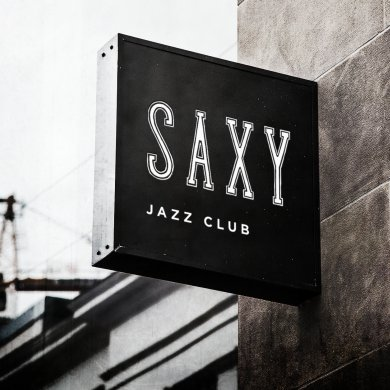

Propuesta de implementación · Saxy Jazz Club
Cada mensaje sin respuesta es una mesa vacía. Te mostramos cómo cambiar eso — sin reemplazar a tu equipo, sino dándole lo que le falta.

Resumen ejecutivo
Saxy Jazz Club tiene un equipo de marketing activo. Tienen presencia, tienen contenido, tienen 46K seguidores que interactúan. El problema no es la estrategia — es el tiempo de respuesta.
Cuando alguien pregunta por el cover del viernes a las 6pm y recibe respuesta el sábado por la mañana, esa mesa ya está ocupada por alguien más.
Responde
Al instante las preguntas frecuentes, 24/7, sin que un humano levante un dedo.
Filtra
Separa el ruido de lo que importa y escala solo lo que sí necesita atención humana.
Entrega
El mensaje al equipo con el contexto ya capturado: fecha, personas, intención.
El equipo de marketing sigue siendo el equipo de marketing. Solo deja de perder tiempo respondiendo “¿a qué hora abren?” por décima vez en el día.
El costo del tiempo de respuesta
“¿Cuánto cuesta el cover del viernes?”
Esa pregunta llega 40 veces a la semana. Cada una necesita respuesta. Ninguna necesita que un humano la responda.
El inbox no distingue urgencias
Quien quiere reservar para 10 personas el sábado llega al mismo inbox que quien pregunta el horario. Se atienden por orden de llegada — no de importancia.
Los picos son impredecibles
Cuando anuncias un artista especial, los mensajes se multiplican. En ese momento — el de mayor oportunidad — es cuando más se resiente la capacidad de respuesta.
Cada minuto de espera tiene un costo
El cliente que no recibe respuesta en los primeros minutos no espera. Busca otra opción. Esa venta nunca supiste que la perdiste.
Objetivo del proyecto
Reducir el tiempo de respuesta en Instagram DM y WhatsApp a segundos — para las preguntas que no necesitan a un humano — y entregarle al equipo de marketing solo los mensajes que sí requieren su atención, con el contexto ya capturado.
→ Respuesta inmediata
Para preguntas frecuentes, las 24 horas, los 7 días.
→ Filtro inteligente
Que separa el ruido de lo que realmente importa.
→ Contexto capturado
Fecha, número de personas, tipo de evento — para que el CM no empiece de cero.
→ Equipo enfocado
En cerrar reservas y gestionar relaciones, no en responder el horario.
La implementación paso a paso
La plataforma
El chatbot se conecta directamente a Instagram y WhatsApp Business de Saxy. Desde ahí orquesta todas las conversaciones automáticas y las que necesitan escalar al equipo.
Los flujos que construimos
Bienvenida y FAQ
Activado cuando alguien escribe por primera vez o usa palabras clave. Responde al instante: horario (Mar–Sáb desde 8pm), cover (Jue $200 · Vie y Sáb $300), ubicación (Plaza O2, Sótano 1, San Pedro) y el link directo a Riservi.
Intención de reserva
Pregunta fecha, número de personas y horario preferido; envía el link de Riservi contextualizado; y si la persona no completa la reserva, hace seguimiento automático a las 24 horas.
Eventos y cartelera
Activado desde posts de artistas o anuncios especiales: info del artista de la semana, precio de boletos, instrucciones de compra y redirección a Riservi o escalada para grupos grandes.
Escalada al equipo de marketing
Detecta preguntas fuera de su alcance, notifica al equipo con el historial completo, el cliente recibe “un miembro de nuestro equipo te responde en breve”, y el CM retoma con fecha, personas e intención ya capturadas.
La integración con Riservi
| Riservi hace | El asistente hace |
|---|---|
| Gestionar disponibilidad de mesas | Responder preguntas antes de la reserva |
| Confirmar y recordar reservas | Guiar al usuario hasta el widget |
| Administrar eventos y covers | Informar sobre precios y cartelera |
| Base de datos de comensales | Primer filtro de conversación |
El asistente no accede a la disponibilidad en tiempo real de Riservi. Lleva al cliente hasta el widget para que lo compruebe directamente. La conexión en tiempo real es posible como evolución futura del sistema.
Lo que no está en el alcance (por ahora)
Conexión en tiempo real con disponibilidad de Riservi → Fase 2
Gestión de comunidad o respuesta a comentarios → ver paquete con CM
Creación de contenido para redes sociales → fuera de alcance
Cobro o venta de boletos dentro del chat → requiere integración adicional
BubbleMesh Xperience
No instalamos la herramienta y te dejamos con el manual. Construimos el flujo, lo entrenamos con la voz y la información de Saxy, lo probamos contigo antes de lanzarlo, y acompañamos el primer mes de operación.
Elías Rico
Líder de Ventas y Operaciones
Diseña la estrategia de implementación y la relación con el cliente.
Emily Sisalima
SR & Account Manager
Tu punto de contacto principal durante todo el proyecto.
Aranza Contreras
Content & Community
Garantiza que cada respuesta del asistente suene a Saxy, no a automatización genérica.
Jesús Mostalac
Marketing y Relaciones Públicas
Asegura que el asistente se integre de forma natural a la experiencia de marca.
Tres puntos de entrada · Mismo alcance, distinto compromiso
Opción 1
Para quien quiere evaluar antes de comprometerse.
MXN
Sin plazo forzoso. Tú decides hasta cuándo continuar.
Opción 2 · 6 meses
Para quien quiere arrancar sin pagar configuración.
MXN
Config. absorbida en el contrato. Compromiso mínimo de 6 meses.
Opción 3 · 12 meses
Para quien busca el mejor precio mensual y piensa escalar.
MXN
Tarifa preferencial por compromiso anual.
¿Quieren también el Community Manager?
Un CM dedicado que opere el asistente, gestione las conversaciones escaladas y maneje la comunidad. Es una inversión mayor — pero convierte el sistema en un equipo de atención completo, no solo una herramienta.
Nota: la licencia de la plataforma del chatbot corre por cuenta de Saxy. Plan recomendado ~$15 USD/mes. Te ayudamos a configurarlo.
De aquí al lanzamiento
Confirmación y firma
Seleccionan la opción. Firmamos el acuerdo y se realiza el primer pago.
Sesión de onboarding
60–90 min donde mapeamos horarios, precios, políticas, FAQ reales, tono y casos especiales. La base del entrenamiento.
Construcción
Construimos los flujos y entrenamos el asistente con la información de Saxy.
Revisión con el equipo
Muestran cómo funciona. Hacen las preguntas que harían sus clientes. Ajustamos lo que no suene bien.
Lanzamiento
El asistente entra en vivo. El equipo recibe un documento de referencia: qué maneja el asistente y qué atiende un humano.
Primer mes de ajustes
Documentamos los casos que no anticipamos y optimizamos los flujos con conversaciones reales.
Del primer pago al asistente en vivo: 2 a 3 semanas
Escríbenos y lo resolvemos hoy.
Asistente Saxy
En línea · responde la propuesta
{{ m.text }}
{{ m.text }}